먼저 메인 타겟 나라를 정해요
설정 화면을 열기 전에 정할 게 하나 있어요. 한국을 메인으로 두고 미국·일본 같은 나라를 서브로 열지, 아니면 한국을 버리고 해외만 메인으로 삼을지예요.
이걸 먼저 정하라는 이유는 언어별로 따로 넣을 수 있는 것과 하나만 둘 수 있는 것이 섞여 있어서예요. 영상의 제목·설명·더빙은 언어마다 따로 넣을 수 있어요. 반면 발표자는 채널 프로필과 채널 이름은 나라별로 나눌 수 없다고 말해요. 영어권만 노리는 채널인데 프로필이 한국어로만 꾸며져 있으면 소용이 없다는 거예요.
| 언어별로 따로 넣을 수 있는 것 | 발표자가 '하나만' 정할 수 있다고 한 것 |
|---|---|
| 영상 제목, 설명, 더빙 | 채널 프로필, 채널 이름 |
채널 설정: 자동 더빙 켜고 기본 언어 맞추기
해외 노출 작업은 채널 전체에 한 번만 해 두는 일과 영상마다 하는 일로 나뉘어요. 이 섹션은 왼쪽 파란 칸, 다음 두 섹션은 오른쪽 칸이에요. 마지막 섹션에서 왼쪽 맨 아래 칸으로 돌아와요. 점선으로 두른 칸이 발표자가 가장 강조한 단계예요.
거주 국가는 그대로 둬요
유튜브 스튜디오에서 설정 → 채널 → 기본 정보 탭을 열면 맨 위에 '거주 국가'가 있어요. 화면에서는 대한민국으로 되어 있어요. 발표자는 이걸 타겟 나라로 바꿀 필요가 없다고 해요. 대한민국으로 둬도 해외에 노출되기 때문이에요.
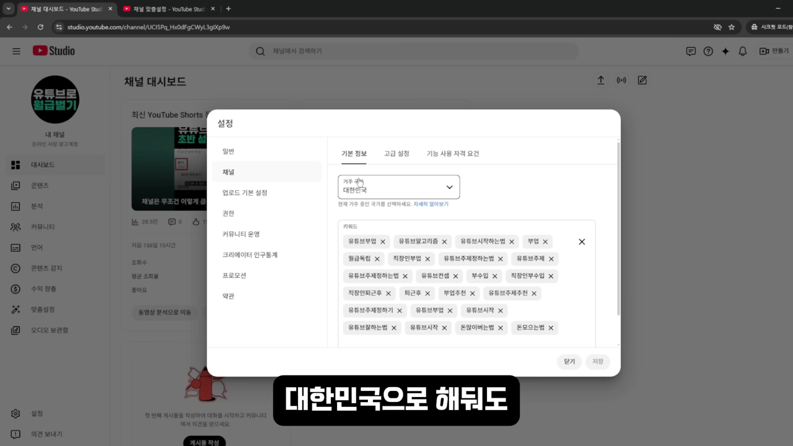
'자동 더빙 허용'을 꼭 켜요
같은 설정 창의 '고급 설정' 탭을 아래로 내리면 '자동 더빙' 항목이 나와요. 여기서 '자동 더빙 허용'에 체크해요. 그 아래 '게시 전에 직접 더빙 검토'도 체크돼 있고, '모든 언어의 더빙 검토'가 선택돼 있어요. 발표자는 따로 작업하지 않고 이 설정 하나로 영어 더빙이 생겼다고 해요. 아직 완벽하진 않지만 AI(Artificial Intelligence)가 점점 정교해지고 있어서 켜 두지 않으면 손해라는 거예요.
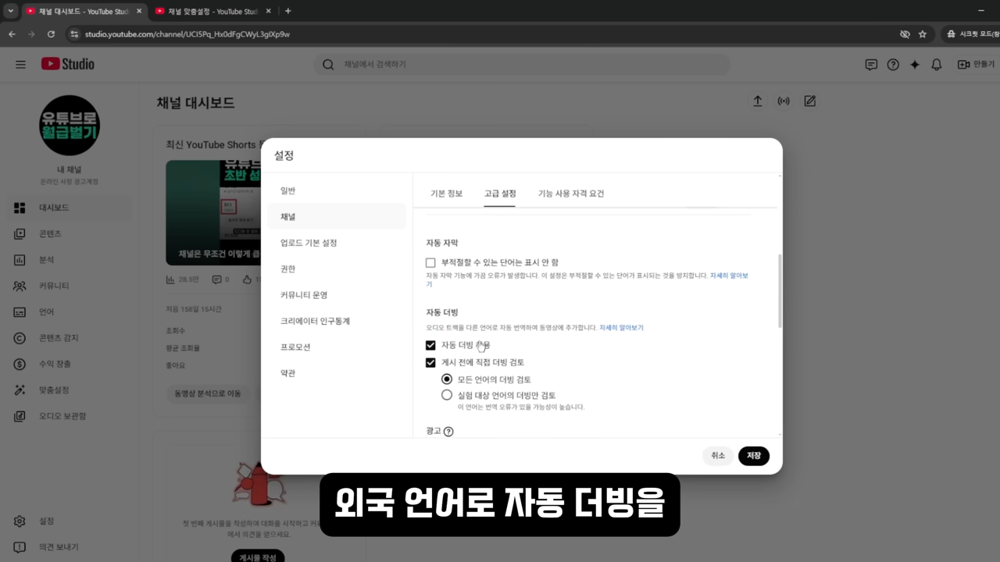
업로드 기본 언어를 한국어로 맞춰요
이번에는 설정 → 업로드 기본 설정 → 고급 설정이에요. 빨간 화살표가 가리키는 '언어 및 자막 면제 인증서' 아래에 '동영상 언어'와 '제목 및 설명 언어'가 있어요. 둘 다 한국어로 맞춰요. 일본을 메인 타겟으로 삼는다면 여기서 일본어를 고르면 돼요.
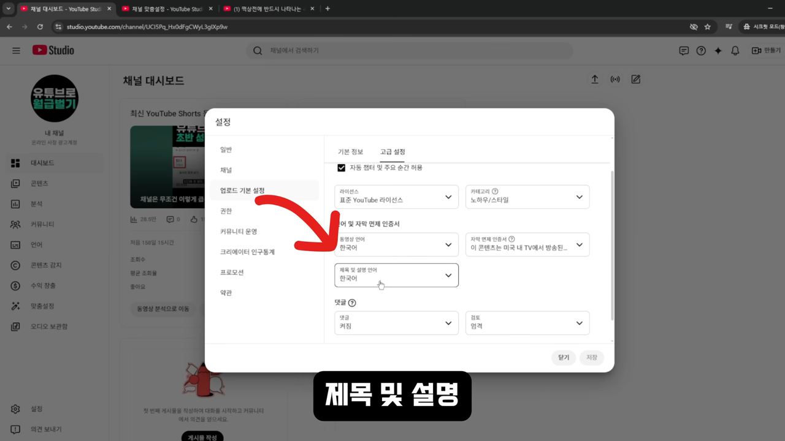
영상마다 썸네일과 제목을 그 나라 말로
여기부터가 노출의 핵심이에요. 영상의 공개 상태를 정하고 나면(꼭 게시하지 않아도) 영상별 메뉴에서 '언어'를 열 수 있어요. 자동 더빙을 켜 뒀다면 유튜브가 번역된 제목과 설명(이런 영상 정보를 메타데이터라고 해요), 더빙을 알아서 넣어 줘요.
아래 화면이 그 언어 페이지예요. 맨 위에 '동영상 언어: 한국어'가 있고, 그 아래 '자막 수정'과 '수동 업로드' 버튼이 있어요. 손가락이 가리키는 왼쪽 위 썸네일에는 한국어 문구가 그대로 박혀 있어요.
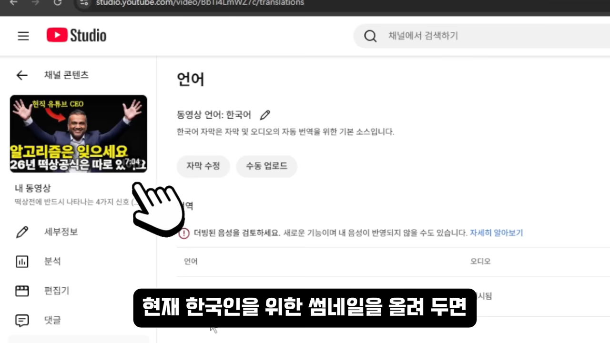
썸네일을 언어별로 따로 만들어요
해외 시청자 화면에 한국어 썸네일이 뜨면 더빙까지 한 노력이 쓸모없어질 수 있어요. 그래서 발표자는 썸네일을 만들 때부터 한국어판과 외국어판을 같이 만들라고 해요. 아래 두 장은 사진과 배치가 똑같고 문구만 달라요. 왼쪽 '알고리즘은 잊으세요 / 26년 떡상공식은 따로 있어요'가 오른쪽에서는 'Forget the Algorithm / The Real 2026 Formula'가 됐어요.
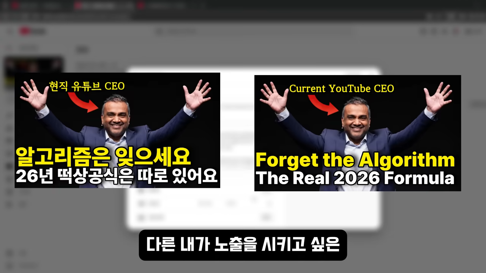
번역은 클로드에게 구어체로 부탁해요
문구를 번역할 때 파파고 같은 번역기를 쓰면 딱딱한 표현이 나오기 쉬워요. 발표자는 클로드 AI에게 한국어 문구를 주고, 그 나라 사람들이 실제로 쓰는 구어체로 옮겨 달라고 하는 게 가장 자연스럽다고 해요.
아래 화면 위쪽 회색 칸이 요청이에요. '트렌디한 표현, 구어체를 사용해서 번역해야 해'라고 적었어요. 답으로 'Forget the algorithm.' 버전과 조금 더 후킹한 버전 두 가지가 나왔어요. 맨 아래 '포인트 설명'에서는 '떡상'을 'blowing up / going viral'로 옮긴 이유처럼 단어마다 왜 그렇게 바꿨는지 알려 줘요.
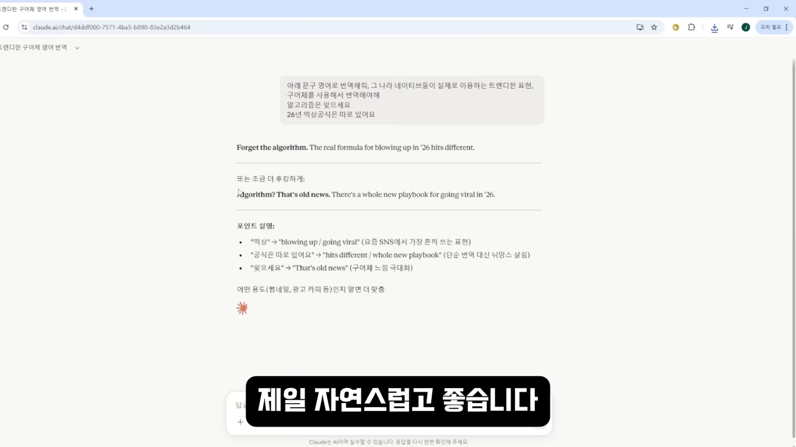
번역 자막을 파일로 올리기
남은 두 번째 숙제는 그 나라 말 자막이에요. 자동 더빙이 나오지 않는 일본어 같은 언어까지 직접 더빙하기는 부담스러울 수 있어요. 번역문을 가지고 일레븐랩스 같은 사이트에서 더빙을 만들 수도 있지만, 발표자는 최소한 자막은 꼭 올리라고 해요. 한국어 자막을 파일로 내려받아 번역한 뒤 다시 올리는 순서예요.
한국어 자막을 SRT 파일로 내려받아요
언어 페이지에서 한국어 자막의 '자막 수정'을 누르면 아래 편집 창이 열려요. 왼쪽에 자막 문장과 시작·끝 시간이 짝지어 있어요. 오른쪽 위 점 세 개 메뉴를 누르면 '자막 다운로드'가 나와요.
저장 창이 뜨면 아래쪽 '파일 형식'을 '모든 파일 (*.*)'로 바꾸고, '파일 이름'의 끝을 .srt로 바꿔요. 화면에서는 captions.srt로 저장했어요.
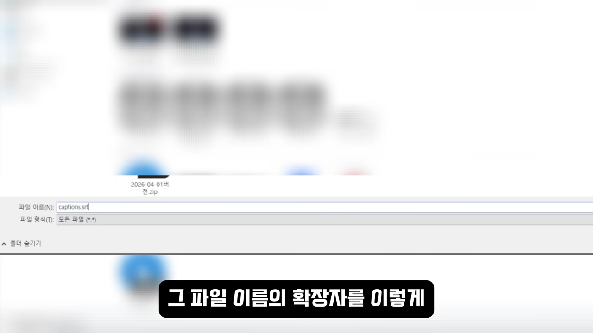
파일 내용이 궁금하면 메모장을 켜고 열기 창에서 파일 형식을 '모든 파일'로 바꾼 뒤 이 파일을 열면 돼요.
클로드에게 번역을 맡기고 형식을 확인해요
클로드 AI 사이트에 내려받은 한국어 자막 파일을 올리고 그 나라 말로 번역해 달라고 해요. 받은 파일을 메모장으로 열어 한국어 파일과 형식이 같은지 봐요. 아래 화면처럼 시간 줄 한 줄, 자막 한두 줄이 한 묶음이고, 묶음 사이가 한 줄씩 비어 있으면 돼요.
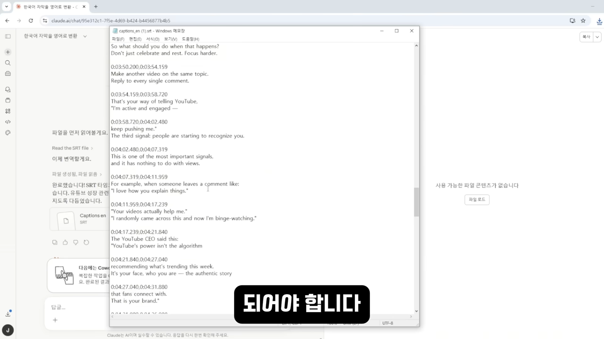
번역 자막을 수동 업로드해요
스튜디오 언어 페이지에서 해당 언어 줄의 자막 '추가'를 누르고 '파일 업로드'로 번역 파일을 올려요. 아래는 영어 자막을 올린 직후 편집 창이에요. 왼쪽 영어 문장마다 시간이 붙어 있고, 아래 타임라인에도 영어 자막이 구간별로 나뉘어 있어요.
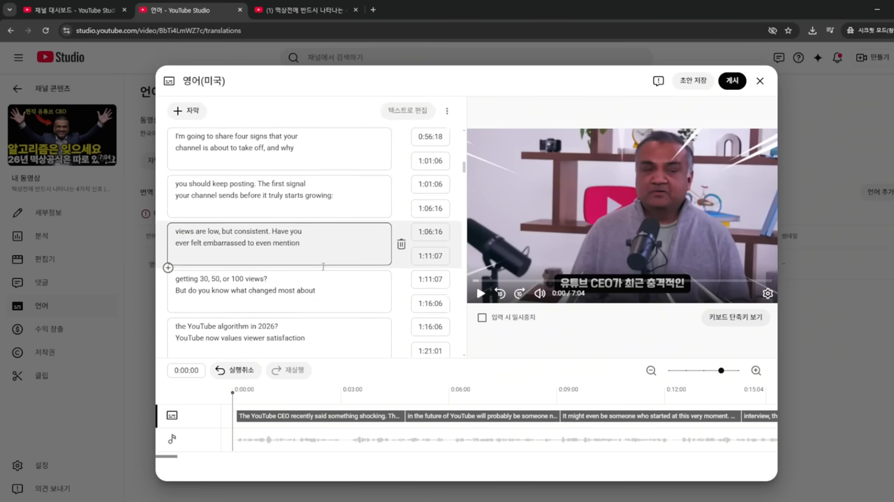
다른 언어도 같은 순서로 하나씩
일본어를 추가하려면 언어 페이지에서 '언어 추가'를 누르고 일본어를 골라요. 목록이 길어서 찾기 어려우면 Ctrl+F로 검색하면 빨라요. 그다음 일본어 제목과 설명을 넣고, 썸네일도 일본어판으로 바꾸고, 자막은 앞과 같은 방법으로 올려요. 아래는 같은 썸네일을 일본어 문구로 바꾼 판이에요.
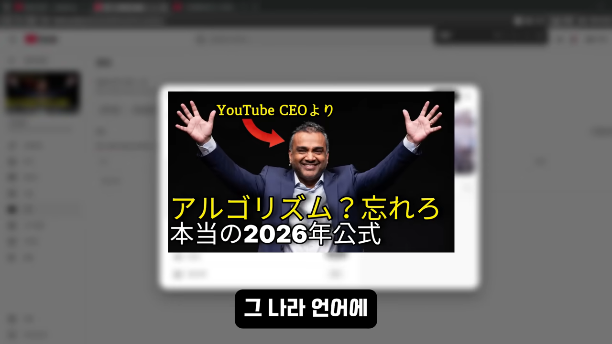
채널 프로필 번역과 소재 고르기
마지막으로 채널 프로필이에요. 발표자는 음식점 간판에 빗대요. 미국에서 식당을 하는데 간판이 한국어뿐이면 현지 사람들에게는 낯설어요. 그 나라 말로 된 간판을 다는 게 이 설정이에요.
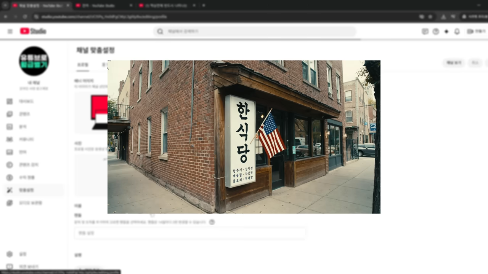
맞춤설정에서 채널 이름과 설명을 번역해요
스튜디오 왼쪽 메뉴의 '맞춤설정'에서 '언어 추가'를 누르면 '채널 번역' 창이 떠요. 왼쪽은 원본 언어(한국어)의 채널 이름과 설명이고, 오른쪽에서 번역할 언어를 골라요. 화면에서는 Ctrl+F로 '일본'을 검색해 일본어를 찾고 있어요.
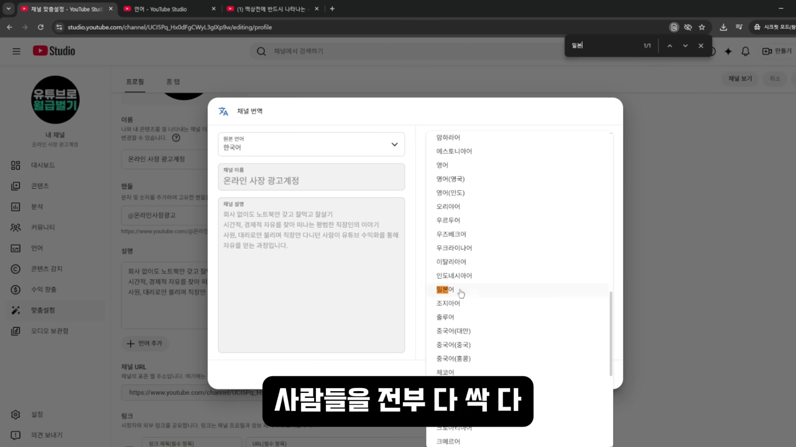
번역을 넣고 나면 프로필 화면 아래 '채널 이름 및 설명의 번역'에 추가한 언어가 쌓여요. 화면에는 일본어와 영어 두 개가 있어요. 게시할 때 인증을 요구할 수 있는데, 나오는 안내대로 하면 돼요.
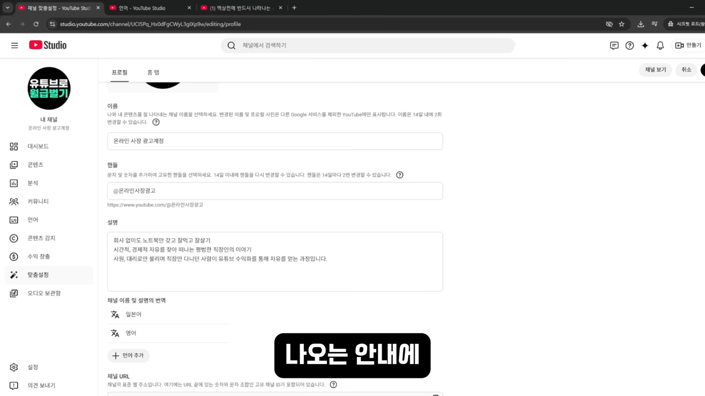
모든 나라를 다 추가할 필요는 없어요. 발표자는 꾸준히 이어 갈 수 있는 만큼만 하라고 해요. 인구가 많은 미국과 일본 정도가 좋고, 조금 더 한다면 중국까지예요.
설정보다 중요한 건 소재예요
발표자가 끝까지 본 사람에게 주는 가장 중요한 이야기는 따로 있어요. 언어 장벽이 낮은 소재를 고르는 거예요. 아무리 번역을 잘해도 주제 자체가 한국 사람에게만 필요하면 해외 시청자가 볼 이유가 없어요.
| 언어 장벽이 높은 소재 | 언어 장벽이 낮은 소재 | |
|---|---|---|
| 영상 속 예 | 한국 퇴직연금 받는 법 | 건강, 사람 이야기 |
| 해외 시청자 입장 | 볼 이유가 없어요 | 어느 나라 사람이든 좋아할 만해요 |
오늘은 하나만
발표자는 이 작업이 귀찮다는 걸 인정해요. 그래서 한 번에 다 하지 말고 작은 것부터 하라고 권해요. 오늘은 자동 더빙 체크 하나, 내일은 영어 썸네일 하나 같은 식이에요. 설정 몇 개, 파일 하나, 썸네일이 전부라고 정리해요.
오늘 하나만 해 보세요. 자동더빙 체크 하나만 켜도 됩니다.
— 영상 07:53